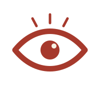

观
己
· 人类图
HUMAN DESIGN
人类图融合易经、占星、脉轮与卡巴拉，用你出生的那一刻，绘成一张专属能量蓝图——照见你天生的决策方式与生命节奏。下面是此刻天空的「流日」人类图。
照见自己 ›
· 再遇行者 ·
观
己
· 人类图
Bodygraph
— 示例盘 —
首页
排盘
流日
记录
反推
合盘
学习 · 知识库
名人
盘主名字
性别
女
男
📅 出生日期 · 时间（公历 / 阳历，非农历）
年
月
日
时
分
时间微调 Time ·
13:30
出生地（决定时区）
生成人类图
保存此盘
自定义 IANA 时区（如 Asia/Shanghai）
高级：
Moshier(离线)
JPL(高精)
真交点
平交点
⚡ 这是「此刻」的流日盘（当下天象快照），不是你的本命盘——在上方填入出生日期、时间与出生地，点「生成人类图」查看属于你的图。
✕